09 · Creación de Apps

Todo lo que construiste durante la ruta.
⏱️ Tiempo: 40 min · 📍 Dónde: un notebook + tu app en el navegador · 🧰 Lo que usas: Databricks Apps, Unity Gateway, Genie Agents
Detectaste el riesgo (dashboards + modelo del Ej. 6), diagnosticaste el porqué (agentes del Ej. 7) y creaste las funciones que actúan (Ej. 8). Ahora vas a reunir todo en un producto: la Central de Retención, una app que cualquier persona de atención al cliente abre en el navegador, sin SQL y sin notebooks.
La publicas ejecutando un único notebook: escribes tu schema y haces clic en Run all. El notebook crea la app, la configura y te devuelve el enlace.
🎯 Al terminar vas a…
- Tener tu app
central-retencion-<tu_schema>publicada, con tres pestañas - Tener un model service del Unity Gateway en tu schema: la IA de la app, gobernada y auditada
- Ver en una tabla cada llamada que la app hizo a la IA
🧠 Conceptos de Databricks de este módulo
| Concepto | Qué es |
|---|---|
| Databricks App | Una aplicación web que Databricks aloja por ti: con su propio cómputo, una URL y el login de tu empresa. No necesitas servidores |
| On-behalf-of (OBO) | La app actúa con tu identidad. La primera vez que la abres, Databricks te pide autorizarla; desde ahí, cada consulta y cada llamada de IA se ejecuta como tú, con tus permisos |
| Unity Gateway | La puerta gobernada para usar modelos de IA en la empresa: quién puede usar qué modelo, con qué límites, y un registro de cada llamada |
| Model service | Un modelo de IA registrado en tu schema de Unity Catalog, con dueño, límite de uso y tabla de inferencia (el registro de cada pregunta y respuesta) |
| Router (multi-agent) | La parte de la app que lee tu pregunta y decide a qué Genie enviarla: Facturación o Soporte |
La Central de Retención
| Pestaña | Qué hace | Qué usa de lo que construiste |
|---|---|---|
| 📊 Cockpit | KPIs de churn, un mapa de LATAM con el riesgo por región y 4 gráficos que se filtran al hacer clic en una región. Cada gráfico tiene un botón ✨ Explicar que pide una lectura a la IA | churn_scores (Ej. 6) + fromzerotohero.churn + tu model service |
| 💬 Asistente | Un chat que responde preguntas de negocio. Un router elige al especialista (Facturación o Soporte) y le pregunta a tu Genie Agent. Ves quién respondió, la tabla y el SQL | tus Genie Agents (Ej. 7) + tu model service (para elegir) |
| 🎯 Retención Personalizada | Lista los clientes con mayor riesgo; eliges uno, generas el e-mail de retención y haces clic en Enviar a CRM | get_cliente_360 (Ej. 8) + tu model service (redacta el texto) |
✅ Antes de empezar
- Ej. 6: tienes la tabla
churn_scoresen tu schema - Ej. 7: tienes los Genie Agents
Facturación - <tu_schema>ySoporte - <tu_schema>(con esos nombres) - Ej. 8: tienes la función
get_cliente_360en tu schema
Paso 1: Publicar la app
- En el menú lateral izquierdo, haz clic en Workspace
- Abre tu Git folder del curso → carpeta
09 - Creación de Apps→ notebookdeploy_app> Usa el Git folder: el notebook toma el código de la app de la carpetaapp/que está al lado - Arriba a la derecha, haz clic en Connect y elige
fromzerotohero_workshop_cluster - Ejecuta la primera celda de código, debajo de Paso 1 — Completa los campos (Shift + Enter): aparecen los campos (arriba del notebook o en el panel lateral Parameters)
- En 1. Tu schema, escribe tu schema (ej.:
ggarcia). Deja los demás campos como están:- 2. Warehouse:
fromzerotohero_workshop_wh - 3. Model service:
retencion-gateway - 4. ID Genie Facturación (opcional) y 5. ID Genie Soporte (opcional): déjalos vacíos (el notebook encuentra tus Genies por el nombre)
- 2. Warehouse:
- Haz clic en Run all y espera de 5 a 10 minutos
El notebook hace todo el trabajo pesado, paso a paso (léelo mientras corre):
- Encuentra el SQL Warehouse y tus dos Genie Agents
- Crea tu model service fromzerotohero.<tu_schema>.retencion-gateway en el Unity Gateway (modelo gpt-oss-20b, límite de 60 llamadas por minuto y tabla de inferencia)
- Prepara el código de la app con tu configuración
- Crea la app central-retencion-<tu_schema>, con su propio cómputo
- Configura el on-behalf-of (permisos sql, genie, ai-gateway y model-serving)
- Publica la app y muestra el enlace
✅ Checkpoint: la última celda muestra Abrir mi app → y la línea Deploy: SUCCEEDED.
💡 Fíjate en lo que no hace: no otorga ningún permiso. Sin
GRANT, sinCAN QUERY, sin compartir tus Genies. Con el on-behalf-of, la app actúa con tu identidad, que ya tiene acceso a todo lo que construiste.
Paso 2: Usar la app
- Haz clic en Abrir mi app →
- La primera vez, Databricks te pide autorizar la app para actuar en tu nombre (SQL, Genie, Unity Gateway). Haz clic en Authorize
- Pestaña 📊 Cockpit: haz clic en una región del mapa y mira cómo se filtran los gráficos. Luego haz clic en ✨ Explicar en uno de los gráficos
- Pestaña 💬 Asistente: haz estas preguntas, una por una:
- Pestaña 🎯 Retención Personalizada: pega
C01575(Mariana), genera el e-mail y haz clic en Enviar a CRM. Luego repite conC00018(Gabriela)
✅ Checkpoint Asistente: arriba de cada respuesta dice "Respondió: Genie de Soporte" (NPS: Chat 6,57 · Email 6,54 · Teléfono 6,47) y "Respondió: Genie de Facturación" (≈ US$ 383.335). Abre Ver el SQL que escribió Genie para ver la consulta.
✅ Checkpoint Retención: Mariana recibe 15% + 10 GB + gerente dedicado; Gabriela, 10% + el doble de internet con WhatsApp + renegociación. Las ofertas vienen de tu get_cliente_360 (la regla del Ej. 8); el modelo del Unity Gateway solo redacta el texto.
💡 ¿Por qué la app necesita autorizar el Unity Gateway? Porque cada llamada al modelo se hace con tu identidad (on-behalf-of). Sin el permiso
ai-gateway, el Gateway rechaza la llamada. Esto es lo que permite saber, después, quién usó el modelo y cuándo.
Paso 3: Ver la gobernanza del Unity Gateway
- En el menú lateral izquierdo, ve a Catalog →
fromzerotohero→<tu_schema>. Además de tus tablas y funciones, verás el model serviceretencion-gateway: es un activo de Unity Catalog, con dueño (tú), permisos y linaje, como cualquier tabla - Cada llamada que la app hizo al modelo quedó registrada en la tabla de inferencia. En el SQL Editor, ejecuta (reemplazando
<tu_schema>):✅ Checkpoint: una fila por cada ✨ Explicar, por cada e-mail generado y por cada pregunta del Asistente (el router). En la columnaSELECT event_time, status_code, latency_ms, destination_model, LEFT(get_json_object(request, '$.messages[1].content'), 200) AS pedido FROM fromzerotohero.<tu_schema>.retencion_gateway_payload ORDER BY event_time DESC LIMIT 10;pedido, fíjate que las ofertas ya llegan decididas al modelo: la regla la decidió tu función, no la IA.
La tabla de inferencia puede tardar unos minutos en mostrar las llamadas más recientes. Para una vista de toda la cuenta (quién llamó, cuántos tokens, qué modelo), Databricks también registra el uso en la tabla de sistema
system.ai_gateway.usage, con algunas horas de retraso.💡 ¿Por qué una app y no otro dashboard? Porque una app te permite hacer cosas: navegas el riesgo, conversas con los datos y disparas la retención, todo en un solo lugar, con la gobernanza de Unity Catalog por detrás.
🧯 Si algo sale mal
| Síntoma | Qué hacer |
|---|---|
No encontré tu Genie 'Facturación - …' |
Revisa el Title de tu Genie (Ej. 7). O pega su ID en el campo 4 o 5 (Genie → Configure → Settings) |
| El nombre de la app quedó cortado | Databricks Apps acepta nombres de hasta 30 caracteres: con un schema largo, central-retencion-<tu_schema> se recorta. Es normal |
No encontré la carpeta app/… |
Abre el notebook desde el Git folder (no importado suelto) |
| El cómputo de la app no queda ACTIVE | Espera un minuto y vuelve a ejecutar la celda del Paso 7 |
Deploy: FAILED |
Vuelve a ejecutar la celda del Paso 9; si sigue, avisa al instructor con el mensaje de Detalle |
| El Cockpit aparece vacío | Revisa que churn_scores exista en tu schema (Ej. 6) |
| El Asistente dice que el Genie no respondió | Espera unos segundos y pregunta de nuevo (el warehouse puede estar encendiéndose) |
| No te pidió Authorize y nada carga | Cierra la pestaña y abre la app de nuevo; si no, avisa al instructor |
📌 Lo que aprendiste
- Una Databricks App convierte lo que construiste en un producto que cualquiera usa en el navegador
- Con on-behalf-of, la app actúa con tu identidad: sin permisos extra
- El Unity Gateway gobierna y registra cada uso de la IA
- Un router puede elegir entre varios agentes especialistas: la idea de Genie One (Ej. 7), dentro de tu app
🔜 Lo que viene
Acabas de cerrar el ciclo del curso: desde los datos crudos (Setup) hasta un producto de retención que un equipo de negocio usa en el día a día (detectar, diagnosticar, decidir y actuar), todo gobernado por Unity Catalog, incluida la IA. Es el mismo patrón que puedes llevar a cualquier caso de uso: datos → métricas → IA → agentes → app.